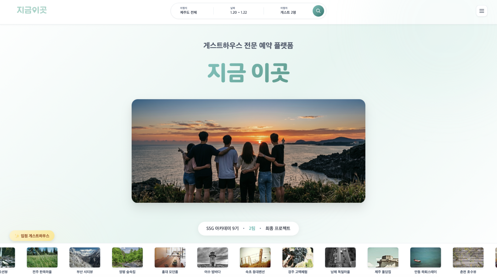

DB 인프라 최적화 및 물류 시스템 (WMS)
Java, MyBatis, MySQL | 성능 병목 92% 해결👉 트러블슈팅: 쿼리 최적화 및 동시성 제어
• 쿼리 최적화: N+1 이슈를 해결하여 응답 속도 92% 향상 (2.5s → 0.4s).
• 데이터 정합성: @Transactional을 통한 원자적 처리로 전표 중복 생성 위험 제거.

안정적인 땅 위에 견고한 로직을 세웁니다.
Infrastructure-Aware Engineer
비즈니스 임팩트를 만드는 실용주의 엔지니어 (Dev + Ops)
단순히 기능을 구현하는 것을 넘어, 시스템 전체의 신뢰성(Reliability)과 성능(Performance)을 최우선으로 생각합니다.
전산 인프라 운영 및 기술 지원
Cloud-Native 백엔드 개발자 과정 (960시간)
주전공: 게임콘텐츠학과 | 부전공: 컴퓨터공학과
• 쿼리 최적화: N+1 이슈를 해결하여 응답 속도 92% 향상 (2.5s → 0.4s).
• 데이터 정합성: @Transactional을 통한 원자적 처리로 전표 중복 생성 위험 제거.

• 보안 인프라: Private Subnet 및 Bastion Host 구축으로 서버/DB 논리적 격리 강화.
• AI 가용성: LLM 비결정적 응답에 대응하는 방어 로직으로 에러율 0% 달성.
• 자원 최적화: interrupt() 및 자원 해제를 통해 메모리 누수 원천 해결.
• 싱크 보정: 타임스탬프 기반 좌표 보정 로직으로 하드웨어 오차 극복 (60fps 구현).